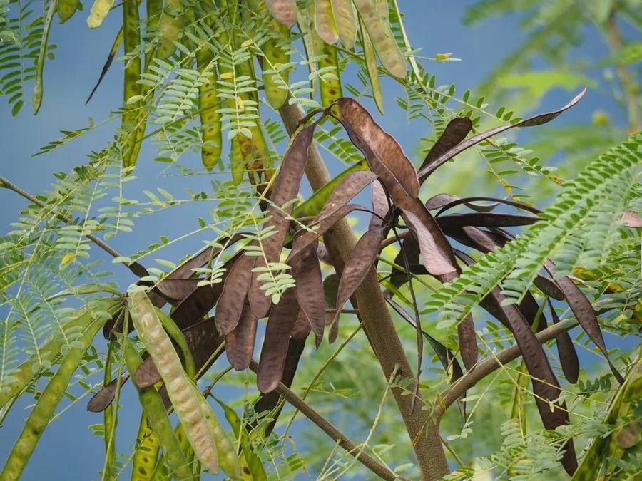

灌木与花木 · 植物界
银合欢 Leucaena leucocephala

原产中美洲的常绿灌木或小乔木，生长快、耐旱，可作饲料与绿肥，但因繁殖力强被多地列为入侵物种。
- 分类
- 门被子植物门纲木兰纲目豆目科豆科属银合欢属
- 栖息环境
- 海拔 800 米以下的热带亚热带地区，喜光耐旱，耐瘠薄
- 地理分布
- 原产中美洲，中国广东、广西、福建、海南、云南等地栽培或逸生
- 保护级别
- 暂无评估；中国未列入国家重点保护野生植物名录
物种志
银合欢为常绿灌木或小乔木，高可达 10 m，枝条无刺；二回羽状复叶，羽片 4–10 对，小叶 10–20 对，线状长圆形。花期 4–6 月，头状花序球形、白色，由多数小花组成；荚果扁平、线形，长 10–20 cm，成熟时褐色，内含多数种子。
银合欢原产中美洲，中国广东、广西、福建、海南、云南、台湾等地栽培或逸生，喜高温、光照充足，耐旱、耐瘠薄，生长极快。枝叶富含蛋白质，是优良的饲料与绿肥；木材可供薪炭与造纸；根系可固氮，能改良土壤。但由于繁殖力强、扩散迅速，银合欢在中国南方及多个国家被列为入侵物种，需要控制其扩散；其种子含有含羞草素，大量饲喂动物可能影响健康。
形态与习性
- 株高可达 10 m，枝条无刺
- 花期4–6 月，头状花序白色
- 果期7–9 月，荚果扁平线形
- 光照喜光，不耐长期荫蔽
- 水分耐旱，怕积水
- 土壤耐瘠薄，各类土壤均可生长
- 主要用途饲料与绿肥、薪炭与造纸、固氮改良土壤
趣味知识
- 银合欢的叶片在夜间会闭合下垂，这种现象叫“睡眠运动”。
- 银合欢枝叶富含蛋白质，是热带地区重要的饲料与绿肥植物。
- 银合欢繁殖力强、扩散迅速，已被多地列为入侵物种。
- 银合欢的种子含含羞草素，大量饲喂动物可能影响健康。